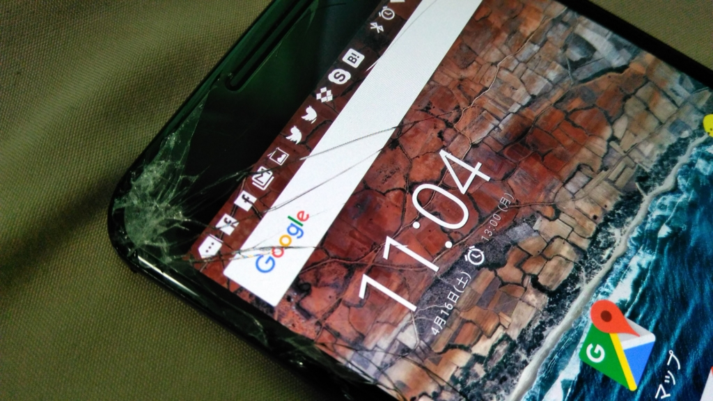
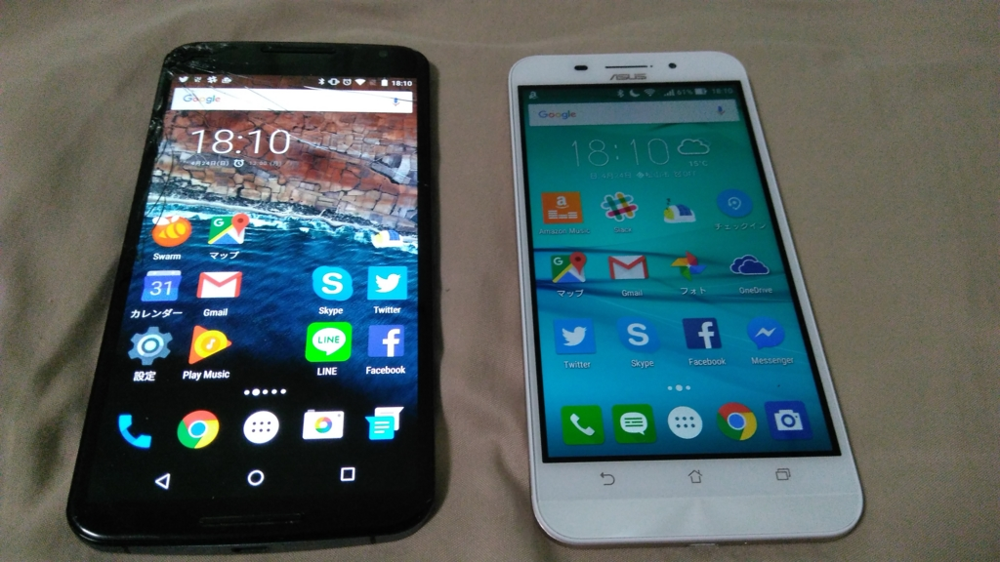
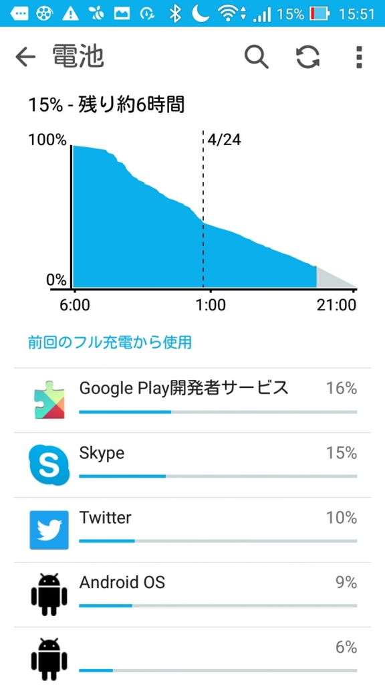

Nexus 6 の液晶を割ってしまったので、その修理代でモバイルバッテリー、じゃなくて Asus Zenfone Max を買った。
公開日：

ポケットからダイブし、アスファルトにカドをぶつけて討ち死にしたウチの Nexus 6（享年1年2カ月）。
当初はそのまま使い続けられないかと思ったが、裂け目からガラスの粉がボロボロと零れ落ち、それに比例するようにシステムの調子が不安定になっていく。液晶パネルを直してもよいのだが、ちょっと調べてみたところ、だいたい 3万円 ぐらいかかるらしい。安い Android 端末が新品で買える値段だ。
先月 NuAns NEO を買ったばかりだが、Windows Phone だけで暮らすのはまだまだ難しい。将棋のモバイル中継が見られないし、株の評価損をチェックすることもできない。毎月スマートフォンを購入するのは、人間としてどうなのだろうと思ったが、背に腹は代えられぬ。液晶パネルの修理代 3万円 を上限として、安い端末を探すことにした。
それで白羽の矢が立ったのがこれ。
 (ホワイト) ZC550KL-WH16")
ホワイトモデルで 30,873 円。マーケットプレースで買うのは若干不安だったが、20日の夜中に注文して22日の朝に到着した。“グッドウィル”という名前の出品者だったが、大変ありがたかった。
こいつの特徴は、なんといっても 5,000mAh という大容量バッテリーを搭載すること。
フツーのスマートフォンの2倍の容量。下手すりゃ、モバイルバッテリーにも匹敵する。

cheero Power Plus 4200mAh DANBOARD version plate 超薄型 モバイルバッテリー 急速充電
- 出版社/メーカー: cheero
- メディア: エレクトロニクス
- この商品を含むブログ (2件) を見る
（たとえば、この cheero Power Plus 4200mAh DANBOARD version plate は 4,200mAh）
正直性能はそれなりだけど、まぁ、そんなに困らないしね。たとえ動作が早くても、バッテリーがすぐすっからかんになるんだったらあまり意味はないし。

大きさは Nexus 6 よりも少し幅がないだけで、だいたいおんなじ感じ。
あと、今回の件で「2年間1回もスマートフォンを落とさずに暮らすのは人類には不可能」ということを痛いほど学んだので、専用のケースも買った。

レイ・アウト ASUS ZenFone Max ZC550KL ケース 手帳型 シンプル ブラック RT-AZMLBC6/B
- 出版社/メーカー: レイ・アウト
- 発売日: 2016/03/20
- メディア: エレクトロニクス
- この商品を含むブログを見る
iPhone ところなり、Android にはケースがないと思い込んでいたけれど、探せば割といっぱいあった。このサイズになるとバンパーよりも手帳タイプのケースもありだなと思ったので、今回はレイアウトの革ケースを選択。
正直、このメーカーでいい思いをしたことがなかったので少し躊躇したのだけど、なかなかカッチリしていて、値段の割にいいケースだと思う。よく考えたら、レイアウトのケースを買ったのは iPhone 3G とかの時代だから、この数年間でクオリティが上がっていては不思議ではないか。

丸一日使ってみたが、半分ぐらいしか減らない。そのままテザリングを有効にしたまま寝て、おやつの時間に思い出してもう一度確認したら、まだ15％ほど残っていた。ゴキブリみたいなしぶとさ……これはなかなかいいと思う。
ただ、ZenUI は気に入らなかったので、ホームアプリを Google Nowランチャー に代えた。これで Nexus 6 とほぼ変わらない使い勝手に戻る。